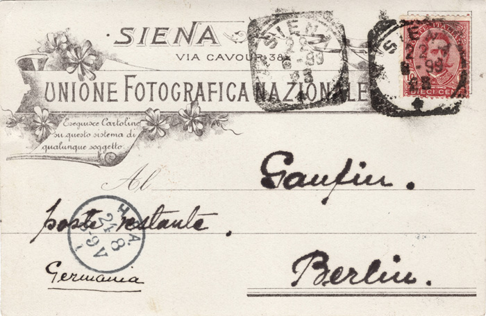
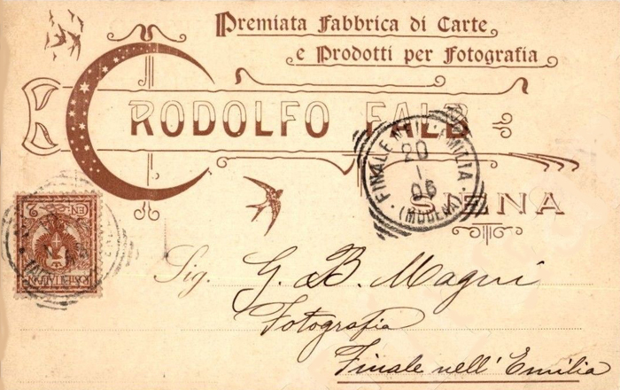
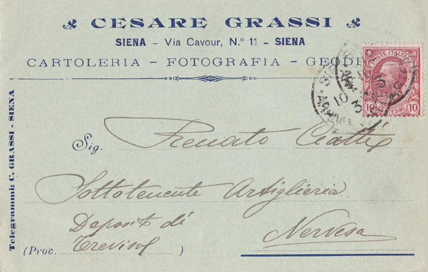
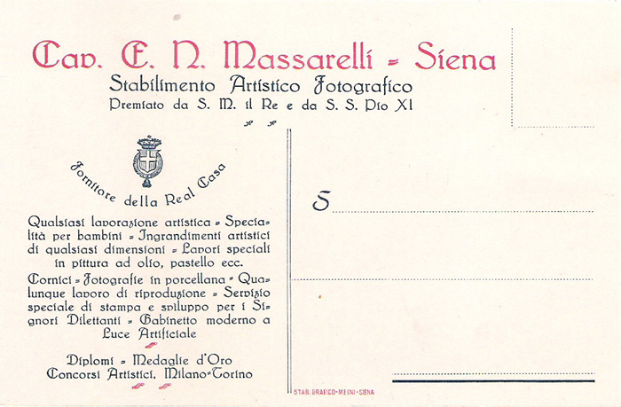
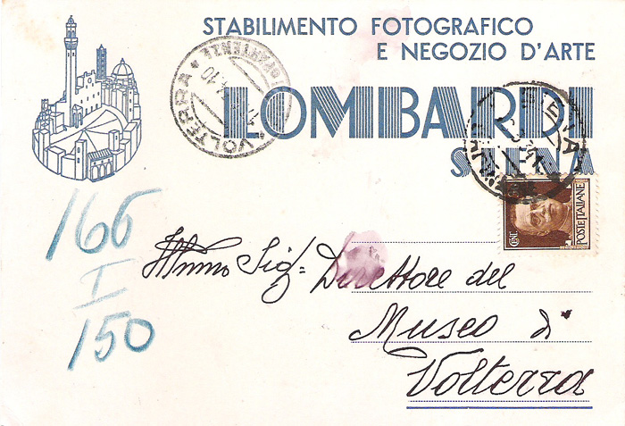
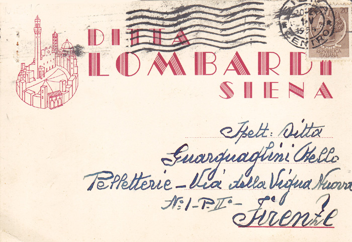

|
- FOTOGRAFANDO IL PALIO -
|
|
IMMAGINI DEL PALIO A COLORI E IN BIANCO E NERO VISTE DA GRANDI FOTOGRAFI
Scorrendo, si potranno apprezzare quattro istantanee artistiche, offerte da 56 grandi fotografi (46 italiani e 10 stranieri)
che hanno immortalato alcuni momenti suggestivi della nostra Festa. Si consiglia di visitare tutte le pagine per meglio valutare le tecniche usate e confrontare come ciascuno di essi ha interpretato il Palio. Cliccando sul nome, elencato in ordine alfabetico, si aprirà lo spazio riservato al professionista o all'amatore prescelto.
- Le quattro foto di Mauro Agnesoni - Le quattro foto di Marco Amatruda - Le quattro foto di Paolo Barni - Le quattro foto di Riccardo Bartalucci - Le quattro foto di Gianfranco Bernardo - Le quattro foto di Giancarlo Betti - Le quattro foto di Luca Betti - Le quattro foto di Andrea Bonfanti - Le quattro foto di Chiara Brembilla - Le quattro foto di Carlo Bressan - Le quattro foto di Giulia Brogi - Le quattro foto di Alessia Bruchi - Le quattro foto di Paolo Carta - Le quattro foto di Conrad Chavez - Le quattro foto di Marco Cheli - Le quattro foto di Pietro Cinotti - Le quattro foto di Nicola De Neri - Le quattro foto di Manfred Deutschlaender - Le quattro foto di Koen De Vocht - Le quattro foto di Marco Donati - Le quattro foto di Paolo Fieni - Le quattro foto di Gabriele Forti - Le quattro foto di Antonio Fraioli - Le quattro foto di Roberto Gernetti - Le quattro foto di Jan-Christiaan Gilliams - Le quattro foto di Mauro Guerrini - Le quattro foto di Vincenzo Ianniciello - Le quattro foto di Simon King - Le quattro foto di Marc Lalo - Le quattro foto di Andrea Lensini - Le quattro foto di Paolo Lo Debole - Le quattro foto di Elisa Lovati - Le quattro foto di Luciano Mariotti - Le quattro foto di Augusto Mattioli - Le quattro foto di Phil Melia - Le quattro foto di Andrea Moneti - Le quattro foto di Daniela Neri - Le quattro foto di Riccardo Pallassini - Le quattro foto di Carlo Pennatini - Le quattro foto di Kim Petersen - Le quattro foto di Luciana Petti - Le quattro foto di Massimo Pianigiani - Le quattro foto di Giuseppe Pons - Le quattro foto di Tiziano Pucci - Le quattro foto di Enrico Querci - Le quattro foto di Helen Elizabeth Sadler - Le quattro foto di Andrea Scirè - Le quattro foto di Marco Soldateschi - Le quattro foto di Tino Soriano - Le quattro foto di Herbert Steele - Le quattro foto di Cosimo Stillo - Le quattro foto di Roberto Testi - Le quattro foto di Paolo Tosti - Le quattro foto di Simon Weir - Le quattro foto di Marco Zamperini - Le quattro foto di Luca Zanon
Resta inteso che chi volesse far uso delle immagini riprodotte in queste pagine, dovrà rivolgersi all'autore dello scatto fotografico.  Immagine tratta da Scatti in Campo 2021 edito dal Consorzio per la Tutela del Palio di Siena       clicca sopra la cartolina commerciale per ingrandirla |